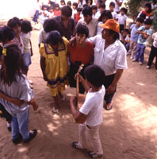

además
de la vistosa maraca shamánica, el Tsitsiíto. Sólo
los hombre tocan las flautas.
además
de la vistosa maraca shamánica, el Tsitsiíto. Sólo
los hombre tocan las flautas.
VII. Manifestaciones Musicales Indígenas
E’ñepá: Fiesta del Guayuco
La iniciación de los niños de la etnia E’ñepá o Panare en el uso de su primer guayuco se festeja con la Fiesta del Guayuco o Katayintö. Las celebraciones y danzas se celebran durante una determinada estación seca, realizando a su final la Fiesta del Guayuco. Sólo los niños varones de seis a nueve años de edad se inician en este ritual. Se tocan instrumentos de viento como las flautas de pan llamadas Are’re’ y unos clarinetes de tallo hueco, ahora a veces de plástico, hasta de dos metros y medio de largo, los Karamataimë o Aramótaimö, que se tocan en pares como macho y hembra. Los niños marchan al pulso grave de los clarinetes, cubiertos todos con vestidos de hojas de palmera tejida.
Hiwi: Fiesta del Guarapo
Es un ritual que
celebra la etnia Hiwi o Guajibo,
durante
los meses de mayo y diciembre. Es la celebración mas importante
del año para la cual la comunidad prepara el Guarapo o chicha
llamada
también yarake, bebida hecha a base de jugo de caña de
azúcar
y yuca. En esta fiesta cantan y danzan con sus instrumentos musicales
llamados
Jiba (flautas de pan) y los Ovevi Mataeto (cráneos de venado), además
de la vistosa maraca shamánica, el Tsitsiíto. Sólo
los hombre tocan las flautas.
Kari’ña: El Mare-Mare
Esta manifestación de los Kari’ña se puede ver bajo Mare-Mare del Carnaval.
Kari’ña: Akaatompo
Este tipo de Mare-Mare es un ritual celebrado el día de los difuntos que se efectúa entre el 1 y 3 de noviembre en el estado Anzoátegui. Es costumbre entre los Kari’ña recibir la visita de los familiares de los muertos. Los cantos Akaatompo, con voz acompañada del Cuatro, recuerdan los mejores momentos vividos junto al familiar difunto, quien comparte la celebración realizada en su honor a través de los textos improvizados por los cantantes. Saluda a los presentes y ordena a sus familiares que den buena atención a los asistentes, invitándolos a compartir los alimentos preparados para dicha ocasión. Con los cantos recuerdan constantemente el motivo de la celebración a los presentes.
Kúrrim: Iniciación de las Mujeres
Después de un mes de ayuno purificador con vegetales y frutas
Pemón: Fiestas de Parischará y Tukui
Estas fiestas o bailes de los Pemón se celebran por motivos de regreso de largos viajes, construcción de viviendas nuevas o reunión de parientes. En el Parischará o baile del jabalí, y en el Tukui o baile de las aves y peces los Pemón se adornan el cuerpo con dibujos o se pintan enteramente con arcilla blanca, hasta en el cabello. Utilizan también faldas de hojas largas y sonmbreros de paja. El baile se desarrolla en círculo abierto, colocando la mano derecha sobre el hombro del que le precede, y tocan al mismo tiempo trompetas de tubos largos de yagrumo, o Kamai, junto con sonajeros de hileras de cáscaras de semillas atados al cuerpo. En el Tukui, el primero de la fila hace sonar el tambor Samburá de dos membranas de piel de tigre o váquiro, e indica el paso hacia adelante o hacia atrás, sorpresa que hace que el grupo se divierta al cambiarse la dirección.
Piaroa: Fiesta del Warime
Realizan este ciclo
ceremonial en un lapso de uno a
tres
meses que comprende diferentes actos rituales como desafío a los
espíritus Méri, la mayor parte de ellos de
carácter
maléfico. Esta es la oportunidad en la que se ejecutan todos los
instrumentos musicales, muchos de los cuales son sagrados y
exclusivamente
para uso en las ceremonias. Los mismos son
ejecutados solamente por hombres
y se depositan en una casa especial, lugar en el que también se
construyen los instrumentos.  Se visten con atuendos de palma y máscaras
de animales y hacen sonar las flautas Muo’tsa y las flautas de
cántaro
o Worá, y las flautas de hueso.
Se visten con atuendos de palma y máscaras
de animales y hacen sonar las flautas Muo’tsa y las flautas de
cántaro
o Worá, y las flautas de hueso.
Pumé: Ritual a la Diosa Kumá
La celebración a la Diosa-madre lunar Kumá de los Pumé, también conocidos como Yaruro, se efectúa durante toda la noche en el día de Santa Rosa el 29 agosto, usualmente a plena lluvia. La fecha utilizada de un santo cristiano es parte de la imposición cultural cristiana, ya que el ritual no tiene nada que ver con Santa Rosa. El shamán canta en trance acompañado de la maraca sagrada durante toda la noche, en forma responsorial con el coro de mujeres y el ritual se complementa con danza. El shamán puede entonar más de seis mil estrofas durante un ritual, sin parar y sin dudar. Las mujeres shamanes continúan durante el día la curación de la noche anterior cantando desde sus chinchorros, ya que los versos y melodías son creación de los espíritus para comunicarse con los seres vivos.
Warao: Fiesta del Najanamu
En el Delta del Orinoco, estado Delta Amacuro, los indígenas Warao practican este ritual de ofrenda a los Jebus, espíritus de los karekos o piedras. El Wisidatu, gran sacerdote y médico realiza el Najanamu para complacer o aplacar a los espíritus. Durante la celebración se ejecutan cantos y bailes acompañados con diversos instrumentos como los Isimoi o pitos y el Hebu Mataro o Maraca shamánica grande.
Wayúu: Baile de la Yonna
Es una
manifestación vigente en el grupo
cultural
Wayúu, que también se conoce como los Guajiros, que
habitan
en la región colombo-venezolana de la Guajira, estado Zulia. La
celebración se realiza para la época de
recolección
de las cosechas y como ritual de fertilidad.  El Baile de la
Yonna es un
baile de pareja libre donde el hombre que se acompaña con un
tambor
deminado Kaashi, es perseguido por la mujer. Van describiendo ambos un
círculo grande en un terreno limpio y plano. La mujer
Wayúu
elegantemente da giros abriendo su manta. Durante el desarrollo del
baile
no se canta, pero se escuchan exclamaciones y gritos tanto del bailador
como de los espectadores, para darle ánino al baile.
El Baile de la
Yonna es un
baile de pareja libre donde el hombre que se acompaña con un
tambor
deminado Kaashi, es perseguido por la mujer. Van describiendo ambos un
círculo grande en un terreno limpio y plano. La mujer
Wayúu
elegantemente da giros abriendo su manta. Durante el desarrollo del
baile
no se canta, pero se escuchan exclamaciones y gritos tanto del bailador
como de los espectadores, para darle ánino al baile.